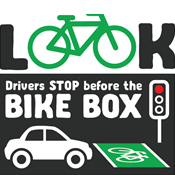
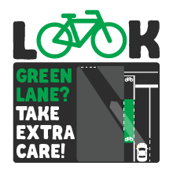
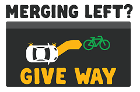

Sharing the Road
Sharing the Road with Pedestrians
When travelling it is important to remember many people travel on roads in diverse ways. When it comes to pedestrians
for example you may not be harmed in a collision if you are driving but it is very likely a pedestrian could be harmed. At a speed
of 60 km/h during a collision with a pedestrian there is essentially a 100% of chance of a fatality. Not only will such an incident leave
greiving families but you also run the risk of a jail sentence. As such some key laws regarding pedestrians include; give way to pedestrians
at a crossing, slow down at roundabouts for pedestrians, at slip lane and driveways give way to pedestrians once again. In the case of an accident
teenagers are potentially risking years of their lifes for vehicular manslaughter. Teenagers have an extremely high incidence rate when it comes to crashes with pedestrians
partly due to the environment they drive in (schools, sport grounds etc.). Teenagers should be attentive in school zones as they tend to drive their frequently and is a high risk
area to collide with pedestrians
The images demonstrate three basic moments in which to give way to pedestrians (Victorian Government, 2021)
Sharing the Road with Trucks
Unlike sharing the road with pedestrians or cyclists trucks present more of a danger to those driving a car. The main rule to keep in mind when encountering
trucks to make sure not to overtake a turning truck no matter the circumstance. This precaution is taken since trucks can take multiple lanes to turn and the size of their vehicles
can make their turns slow and lumbering. However, similarly make sure not to overtake a breaking truck. Trucks often take much longer to reduce their speed when compared to cars and overtaking
a breaking truck can run the risk of having your car be rear-ended. Teenagers can often be unaware of the size and danger of turning trucks given their lack of experience on the road. When you drive make sure to be wary and give trucks plenty of leeway when they turn.
Sharing the Road with Cyclists
It is really important to be aware of cyclists on the road as they have little protection in a crash and also actively use the road. When near a bike you must stay 1m away on roads with speed
limits less than 60 km/h and 1.5m with speed limits more than 60 km/h. The minimum distance required to pass is equivalent to the widest part of your vehicle or vehicle attachment. Overall, it is imperative
to maintain patience when encountering cyclists on the road. These rules are important as larger vehicles can cause turbulence for the rider and provide room for the cyclists if they have to avoid
obstacles. An important note is that Drivers are allowed to cross solid lines when overtaking cyclists. Teenagers have the highest incidence rate with cyclists on the road. As such it is imperative that teenagers remain attentive and respectful of boundaries when driving near cyclists.



The images demonstrate three basic moments in which to give way to cyclists (Victorian Government, 2021)